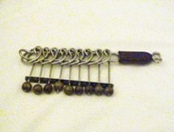

九连环是一种源于中国的传统智力游戏。

如图所示，九个的圆环套在一把“剑”上，并且互相牵连。游戏的目标是把九个圆环全部从“剑”上卸下。
圆环的装卸需要遵守两个规则
1．第一个（最右边）环任何时候都可以任意装上或卸下
2．如果第k个环没有被卸下，且第k个环右边的所有环都被卸下，则第k+l个环（第k个环左边相邻的环）
可以任意装上或卸下与魔方的千变万化不同，解九连环的最优策略是唯一的。
为简单起见，我们以“四连环”为例，演示这一过程。这里用1表示环在“剑”上，0表示环已经卸下。
初始状态为1111，每步的操作如下
1. 1101（根据规则2卸下第2个环）
2. 1100（根据规则1卸下第1个环）
3. 0100（根据规则2卸下第4个环）
4. 0101（根据规则1装上第1个环）
5. 0111（根据规则2装上第2个环）
6. 0110（根据规则1卸下第1个环）
7. 0010（根据规则2卸下第3个环）
8. 0001（根据规则1装上第1个环）
9. 0001（根据规则2卸下第2个环）
10. 0000（根据规则1卸下第1个环）
由此可见，卸下“四连环”至少需要10步。
随着环数增加，需要的步数也会随之增多。例如卸下九连环．就至少需要341步。
请你计算，有n个环的情况下，按照规则，全部卸下至少需要多少步。